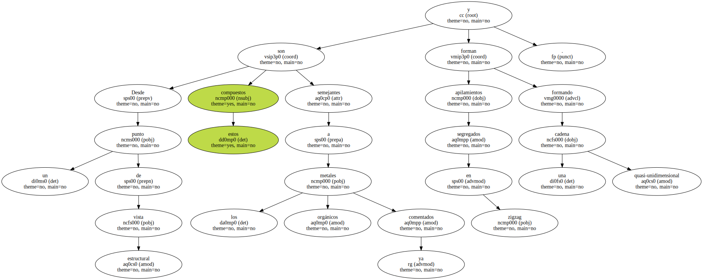
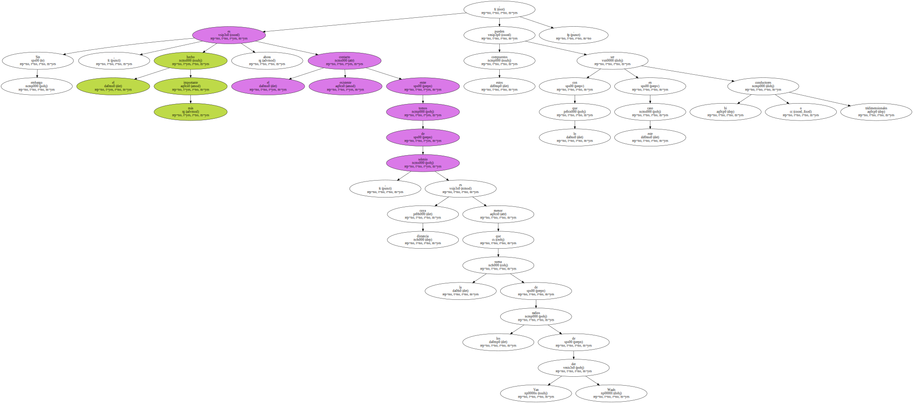
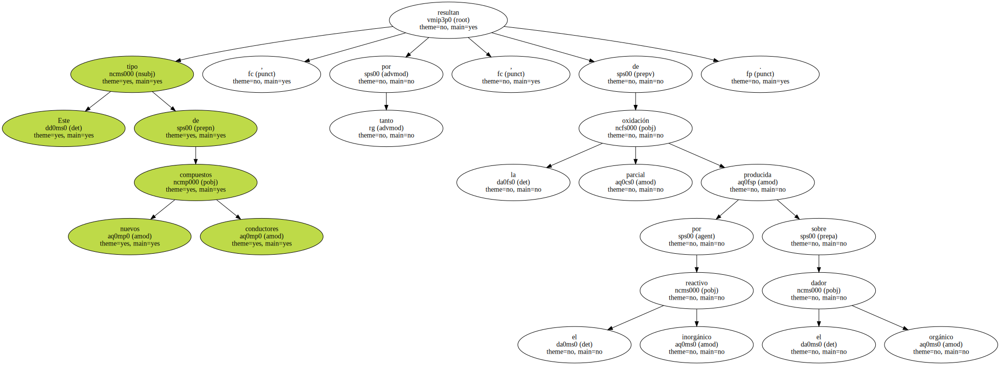
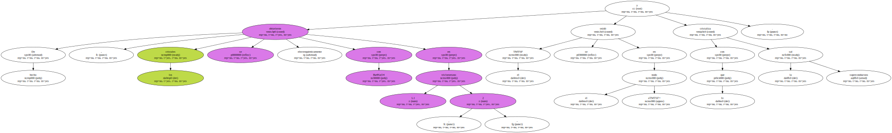
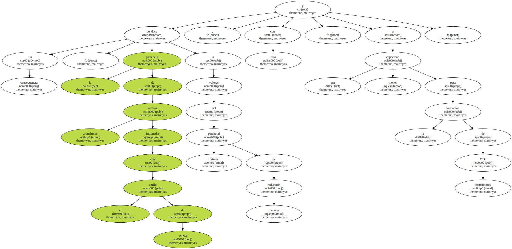
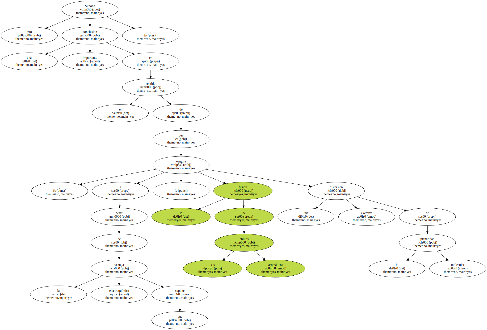
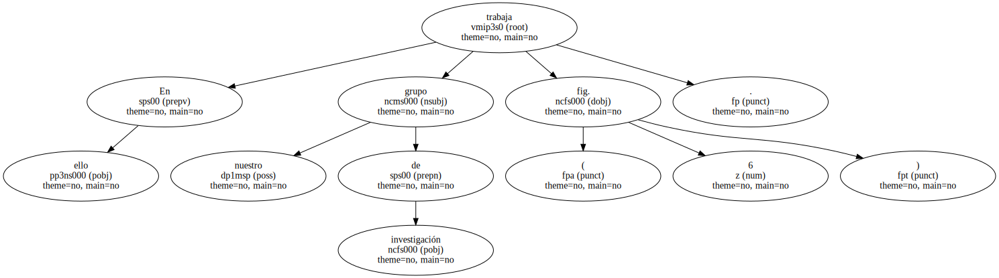
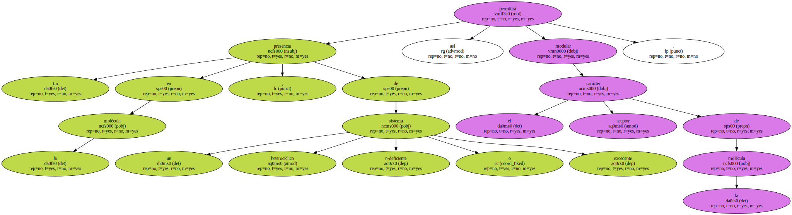
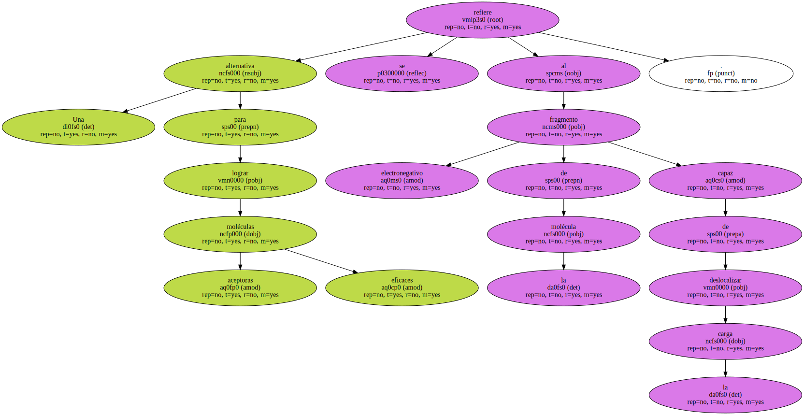

Desde un punto de vista estructural estos compuestos son semejantes a los metales orgánicos ya comentados y forman apilamientos segregados en zigzag formando una cadena quasi-unidimensional.
Sin embargo , el hecho más importante ahora es el contacto existente entre tomos de selenio , cuya distancia es menor que la suma de los radios de Van der Waals , con lo que en este caso estos compuestos pueden ser conductores bi o tridimensionales.
Este tipo de nuevos compuestos conductores resultan , por tanto , de la oxidación parcial producida por el reactivo inorgánico sobre el dador orgánico.
De hecho , los cristales se obtuvieron electroquímicamente con Bu4NaO4 en 1,1 , 2 - tricloroetano y el TMTSF se oxidó en el nodo aTMTSF+ con lo que cristaliza la sal superconductora.
En consecuencia , la presencia de anillos aromáticos fusionados con el anillo de TCNQ conduce a valores del primer potencial de reducción menores y , con ello , a una menor capacidad para la formación de CTC conductores.
Supone esto una conclusión importante en el sentido de que , a pesar de la ventaja electroquímica que supone , la fusión de sus anillos aromáticos origina una excesiva distorsión de la planaridad molecular.
Una alternativa para lograr una menor repulsión coulómbica , y al propio tiempo modular el potencial redox , consiste en la síntesis de moléculas aceptoras con sistemas n extendidos que contengan anillos heterocíclicos.

En ello trabaja nuestro grupo de investigación ( fig. 6 ).
La presencia en la molécula , de un sistema heterocíclico n-deficiente o excedente permitirá así modular el carácter aceptor de la molécula.
Una alternativa para lograr moléculas aceptoras eficaces se refiere al fragmento electronegativo de la molécula capaz de deslocalizar la carga.
